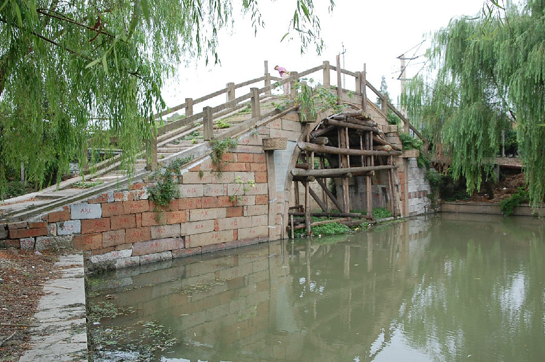
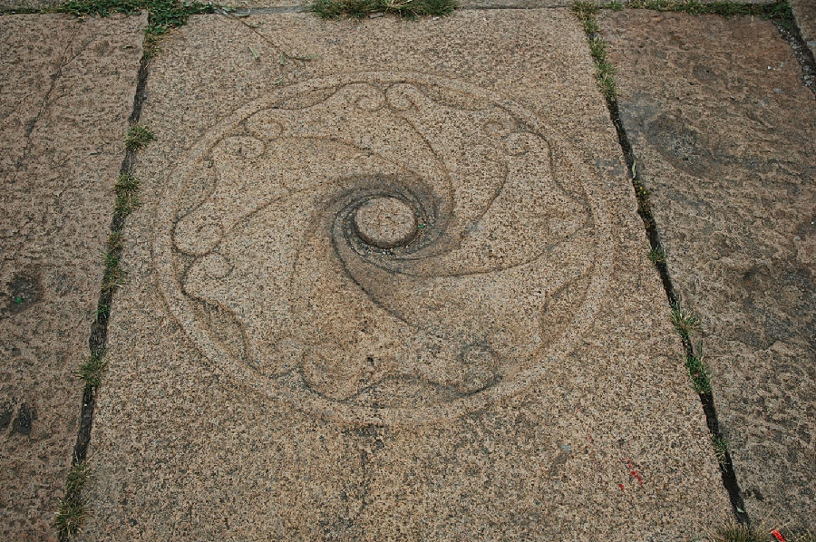

嘉兴市文物保护网 · 市级文物保护点 · 2020-11-09 · 原文


日旸桥位于嘉兴市南湖区南湖街道烟雨社区，曹皇庙北面，沪杭铁路东侧。南北跨河港，为单孔石拱桥，始建年代不详，但据明万历《秀水县志》，最迟明代已有此桥。日暘桥全长19.82米，桥面宽2.9米，落坡宽3.4米、呈喇叭状，南北两侧各有台阶20级和15级。东、西两侧桥额之左分别有“光绪乙卯皋月里人集建”、“光绪五年皋月里人集建”字样，可见桥重建于清光绪五年（1879）。桥面顶盘石中央刻有水涡纹。桥额刻有：“重建日旸桥”，东侧桥联为“百尺魏梁东南湖永资砥柱，千条善路武惠祠咸热心香”（隶书）；西侧桥联为“风日晴和鸳水双流□画舫”（行书），下联被邦岸遮挡不可见。日旸桥是嘉兴市区仅存的石拱桥之一，造型优美，做工考究，具有较高历史和科学价值。2010年公布为嘉兴市文物保护点。